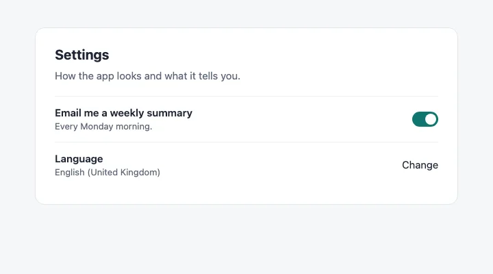
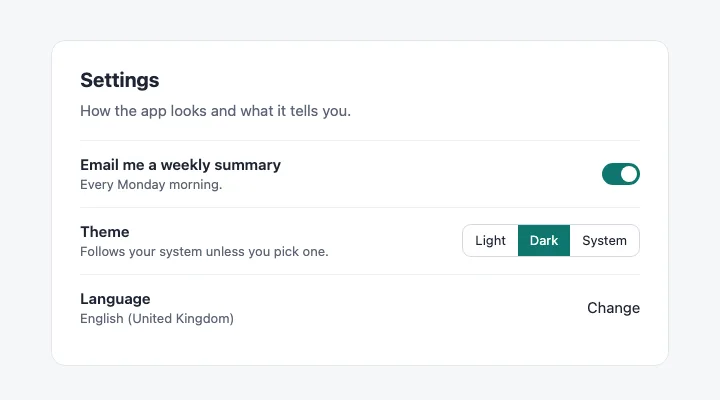

Theme row
- Was
- No theme choice: the app always followed the system.
- Now
- A Theme row with Light, Dark and System; System is the default.




The settings page had no way to pick a theme; the app always followed the system. It now has Light, Dark and System, remembered per device.
npm test: 212 passednpx tsc --noEmit: cleanOn the session's branch pulse/chat-a1b2c3; the pull request opens for review.
Open a picture to see it full size; go back to return here.

